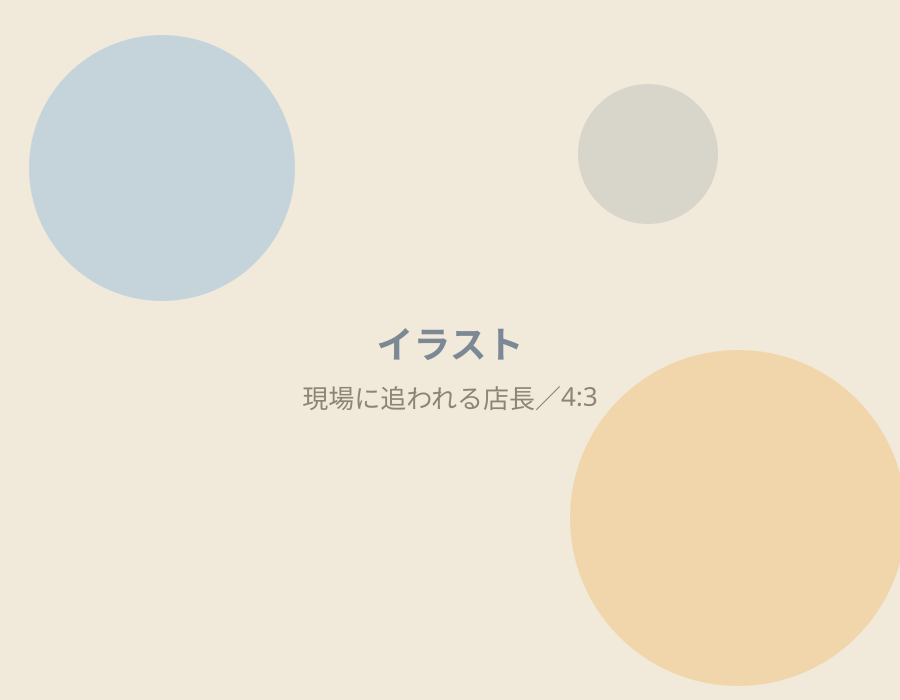
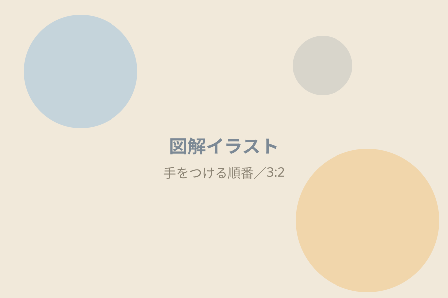
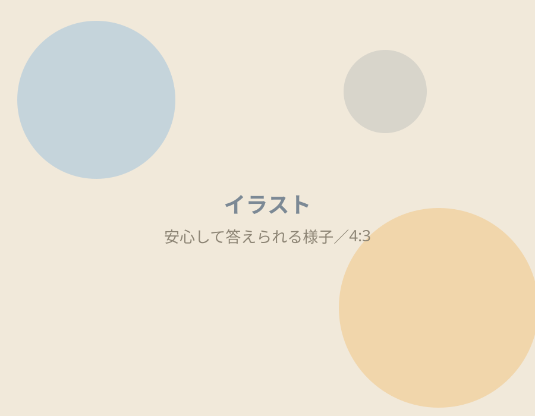
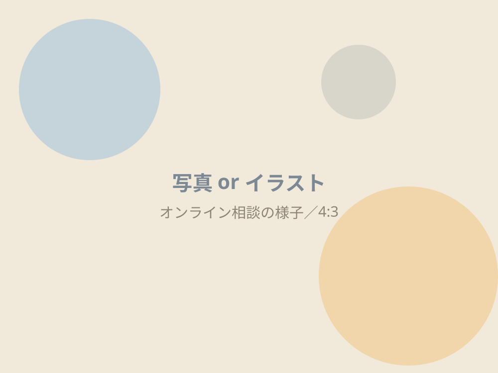
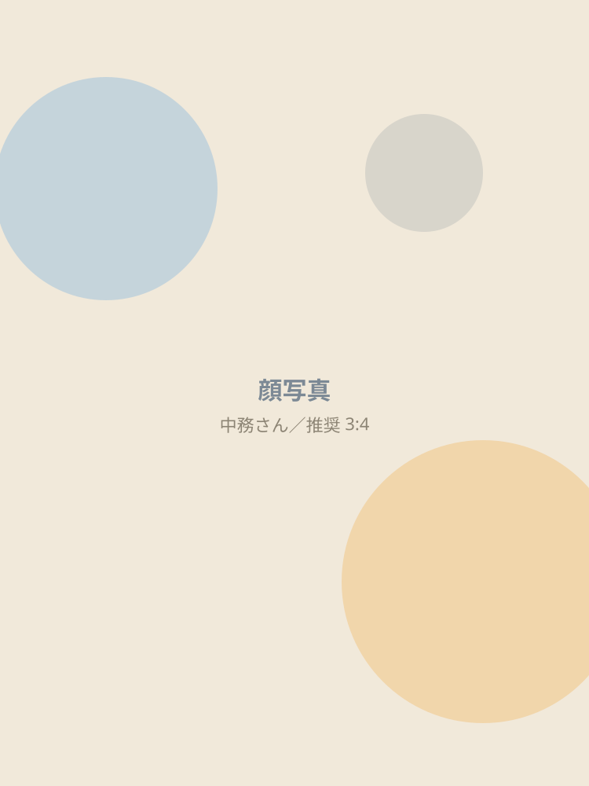

数字が後回しになるのは、
サボっているから
ではありません。
現場に立って、体験対応をして、シフトを埋める。
気づけば、今日も終わっている。
忙しい人ほど、
経営から遠ざかります。
足りないのは、
やる気ではなく
「順番」です。

集客も、採用も、継続も、全部大事。
でも、全部いっぺんには無理です。
どこから手をつけるか。
それが決まっていない
だけです。
だから、まず
現在地を測ります。
- 3分
- 20問
- 0円
- 収支の把握
- 顧客の把握
- 集客力
- 継続力
- 組織力
他人と比べる診断では
ありません。
あなたが決めた目標と
比べます。
3分後、
これがわかります。
01
理想までの差
年間◯◯万円、と
金額で出ます。
02
理想への準備度
いまの体制で届くのか、
％で出ます。
03
9つの数字
把握できているのは
いくつか。
04
優先すべき3つ
明日やることが
決まります。


答えられなくて、
大丈夫です。
- 数字がわからなくても答えられます
- 一人で運営していてもOK
- 全部できている人は、ほとんどいません
できていないと気づくことが、
いちばんの成果です。
診断のあと、
30分だけお話しします。

出た差を、どこから埋めるか。
一緒に順番を決めます。
10名まで
もちろん、無料です。
私もまだ、駆け出しのコンサルです。
だからまず、話を聞かせてください。
役に立てるかどうかは、そのあと決めてもらえれば十分です。
売り込みはしません。

この診断をつくった人
中務正幸株式会社NeeDS 代表取締役
- 神戸・六甲道でパーソナルジム3店舗、10年以上
- 元プロ野球（阪神タイガース）・MLB傘下トレーナー
診断の5つの領域は、
私が10年かけて潰してきた
課題そのものです。
うまくいったことも、いかなかったことも話します。
受け取り方
-

STEP 1
LINEに登録する
-

STEP 2
診断が届く
-

STEP 3
3分で答える
よくある質問
売り込まれませんか？
しません。まずお話を伺いたいだけです。
数字がわからなくても大丈夫ですか？
大丈夫です。「把握しているか」を選ぶだけで答えられます。
一人で運営しています。
組織の設問を除いて診断できます。
どれくらい時間がかかりますか？
3分です。スマホで完結します。